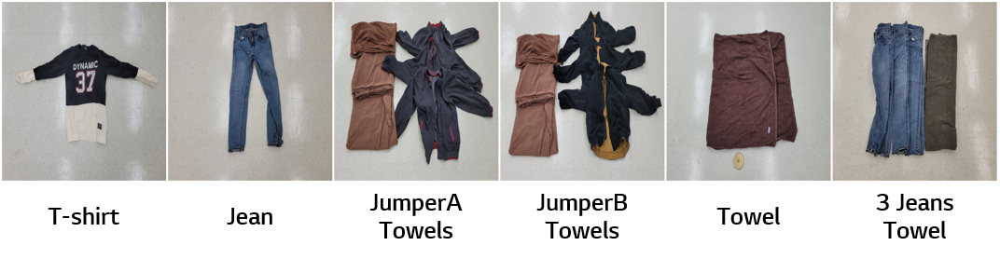
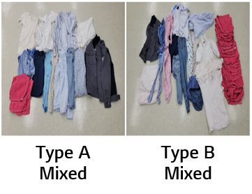
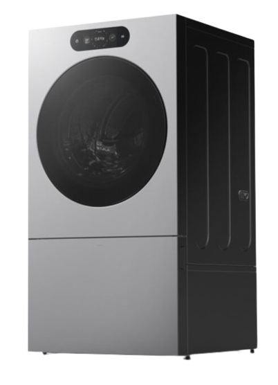

2024 IEEE Conference on Artificial Intelligence (CAI), Singapore
LG Electronics AI Lab
TL;DR
Delayed Online Update (DOU)는 실험실 환경에서의 모델 학습과 실제 환경에서 수행시 수집된 데이터를 조합한 Continual Offline Reinforcement Learning으로, 실생활에서 접하게 될 다양한 세탁물의 탈수 환경에서도 진동을 최소화할 수 있도록 load balancing 성능을 개선한 제어 방법입니다.
{kind=link}
Overview
Problem
세탁기의 탈수 과정 수행시 발생하는 진동을 줄이기 위해서는 기구 안의 세탁물간의 균형이 이뤄져야 하나, 그 세탁물의 조합은 무한대에 가까우며, 개별 조합에 따른 진동 패턴도 다릅니다. 또한 이 모든 경우의 수에 대응하기 위해서는 세탁기 개발자가 대표적인 세탁물 케이스에 한하여 실제 수행 착오를 겪으면서 성능을 개선하는 User-In-The-Loop(UITP) 과정을 취하고 있습니다. 또한 대량 생산되는 생활가전의 특성상 저사양의 MCU가 일반적으로 사용되기 때문에, 실제로 학습되지 않은 부하에 대해서 제어 성능을 개선하는 데 한계가 있습니다.
Approach
본 논문에서는 Continual Offline Reinforcement Learning을 활용한 세탁기 모터 제어를 통해 다양한 세탁물 탈수시 발생하는 진동을 저감하고자 했으며, 실제 환경에서 쌓이는 unseen transition data를 활용한 delayed online update (DOU) 방식을 통해 기존 데이터와 실제 환경 데이터간의 distribution shift 위험을 줄이고자 했습니다.
Outcome
실험실 환경에서 6개의 세탁물을 대상으로 실험한 결과, 평균 \(16%\) 정도의 진동을 줄일 수 있었습니다.
Method
- 실험실 환경에서 세탁기 운전에서 다양한 세탁물에 대한 transition data를 수집합니다.
- 탈수 구간에서 진동을 줄일 수 있도록 Objective를 정의하고 이를 기반으로 Offline RL Policy를 학습합니다.
- 학습된 policy를 실제 환경에 deploy한 후, 새롭게 수집되는 online interaction data를 delay window 동안 누적합니다.
- 짧은 online rollout마다 즉시 반응하는 대신 확장된 dataset(기존데이터 + 새로 수집된 데이터)으로 policy를 갱신합니다.
{kind=link}
동일한 세탁물에 대해서 실험실 환경에서 수집된 데이터와 실제 환경에서 수집된 데이터간의 분포를 시각화했을 때, 비슷하게 겹치는 세탁물도 있는 반면 둘 간의 분포가 일치하지 않는 현상도 나타났습니다. 이를 통해 Offline Data와 Online Data 간의 Distribution Shift가 발생하고 있는 것을 확인할 수 있었습니다.
Results
Average Success Rate
{kind=link}
실험실 환경에서 6개의 세탁물을 대상으로 DOU를 두차례 수행했으며, 이에 대한 결과가 초기 baseline보다 높은 평균 success rate(\(16%\))를 보였습니다.
Multi-Task Laundry Set

세탁기에 세탁물이 투입되어 있는 형태를 하나의 task를 정의했으며, 실험시 Multi-task 형태로 구성하여 진행했습니다.Unseen Tasks

학습된 세탁물뿐만 아니라 실생활에서도 접하게 될, unseen 세탁물에 대해서도 성능 평가를 진행하여 Generalization 여부도 확인하고자 했습니다.Production Device

해당 과정을 통해 개선된 강화학습 모델은 실제로 대량생산된 모델에 탑재되어 세계최초로 출시되었습니다.Videos
Supplemental motion example.
Naive rule-based baseline motion.
Proposed learned motion.
Poster
{kind=link}
Citation
@inproceedings{kang2024dataDrivenRLWasher,
title = {Data-Driven Reinforcement Learning for Optimal Motor Control in Washing Machines},
author = {Kang, Chanseok and Bae, Guntae and Kim, Daesung and Lee, Kyoungwoo and Son, Dohyeon and Lee, Chul and Lee, Jaeho and Lee, Jinwoo and Yun, Jae Woong},
booktitle = {Proceedings - 2024 IEEE Conference on Artificial Intelligence (CAI)},
pages = {418--424},
year = {2024},
doi = {10.1109/CAI59869.2024.00083}
}